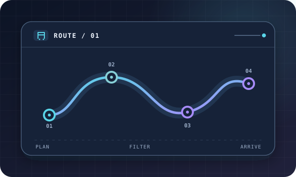

01 / ANDROID
轨迹 · 铁路出行规划Trajectory · Railway Trip Planner
独立开发的 Android 铁路出行规划工具；支持途径站、换乘筛选，以及联网或静态时刻表规划。An Android railway trip planner I developed independently, with via-station and transfer filters plus online or static timetable planning.
查看项目View project